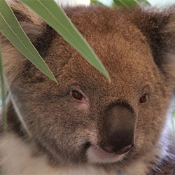

Koala at treeBaby koala - CollieWhy Koalas Hug TreesThe Key to Saving Starving Koalas Might Be…Their PoopKoalas aren’t primates, but they move like monkeys in trees

What does a koala’s nose knowKoala at the beach How Long Do Koalas Really Sleep In A Day?This baby Koala just loves cuddlingOrphaned koala finds comfort